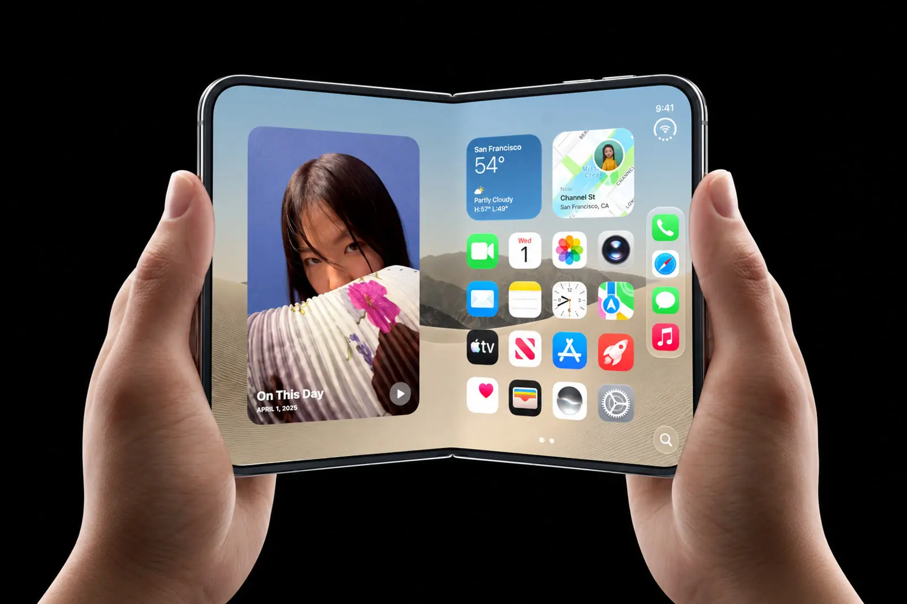

استقبال خیرهکننده از اولین گوشی تاشو اپل؛ ظرفیت سفارش سال ۲۰۲۶ تکمیل شد

گوشی تاشو اپل چه ویژگیهایی دارد؟
گوشیهای تاشو در سالهای اخیر توجه زیادی را به خود جلب کردهاند و شرکتهای مختلفی در این زمینه فعالیت میکنند. ورود اپل به این بازار نیز میتواند برای علاقهمندان به فناوری جذاب باشد.
طراحی تاشو به کاربران اجازه میدهد از نمایشگری بزرگتر در دستگاهی با ابعاد مناسب استفاده کنند. این ویژگی میتواند تماشای فیلم، مطالعه و اجرای همزمان چند برنامه را آسانتر کند.
کیفیت نمایشگر یکی از مهمترین بخشهای چنین محصولی است. مقاومت صفحهنمایش در برابر باز و بسته شدن مداوم نیز اهمیت زیادی دارد.
از دیگر موضوعات مهم میتوان به طراحی لولا، وزن دستگاه، ظرفیت باتری و کیفیت دوربینها اشاره کرد. این موارد نقش مهمی در تجربه روزمره کاربران خواهند داشت.
هماهنگی نرمافزار با نمایشگر تاشو نیز اهمیت زیادی دارد. برنامهها باید بتوانند از فضای نمایشگر به شکل مناسبی استفاده کنند.
با این حال، قیمت نهایی، زمان عرضه و مشخصات رسمی محصول از مواردی هستند که برای نتیجهگیری دقیق باید به اطلاعات تأییدشده شرکت سازنده مراجعه کرد.
اگر اپل چنین محصولی را عرضه کند، احتمالاً مقایسه آن با گوشیهای تاشوی موجود در بازار برای کاربران و علاقهمندان به فناوری جذاب خواهد بود.
نظرات شما